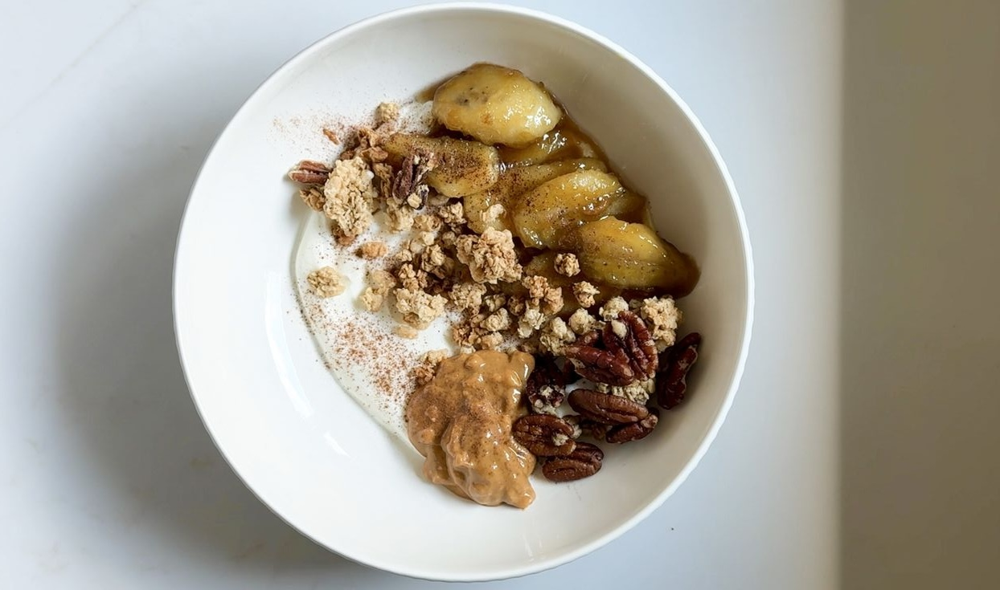
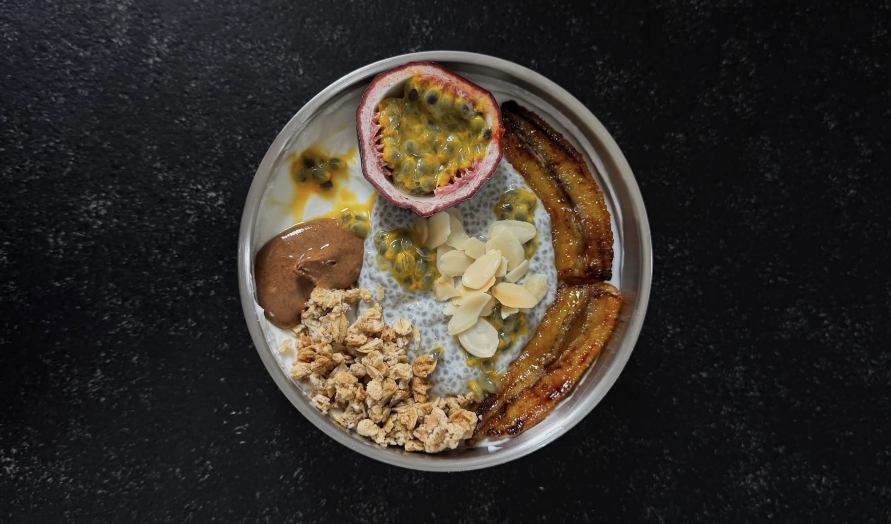
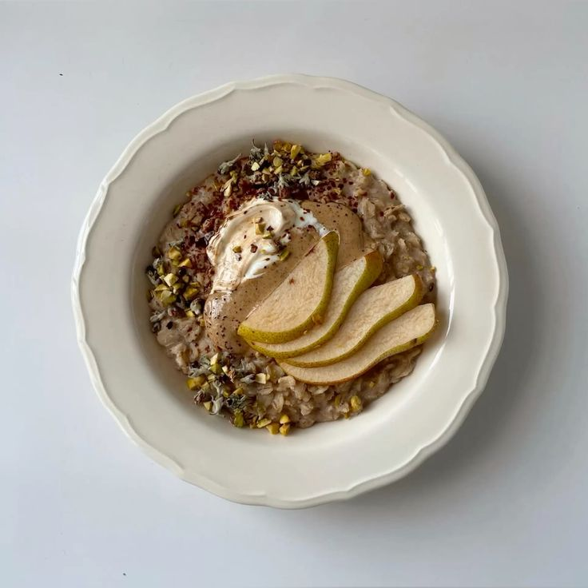
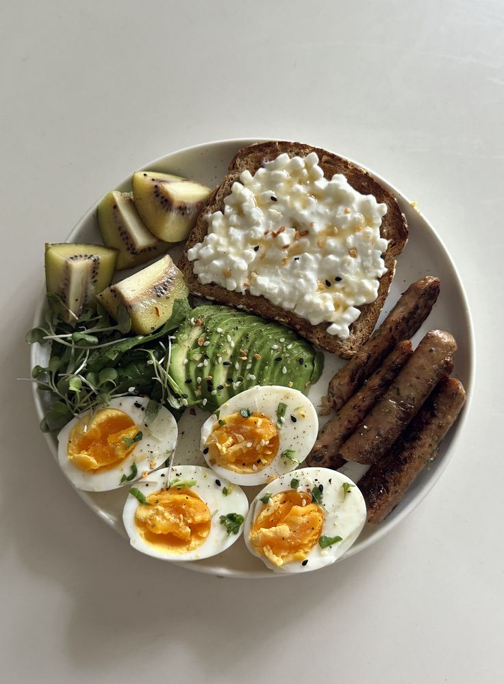
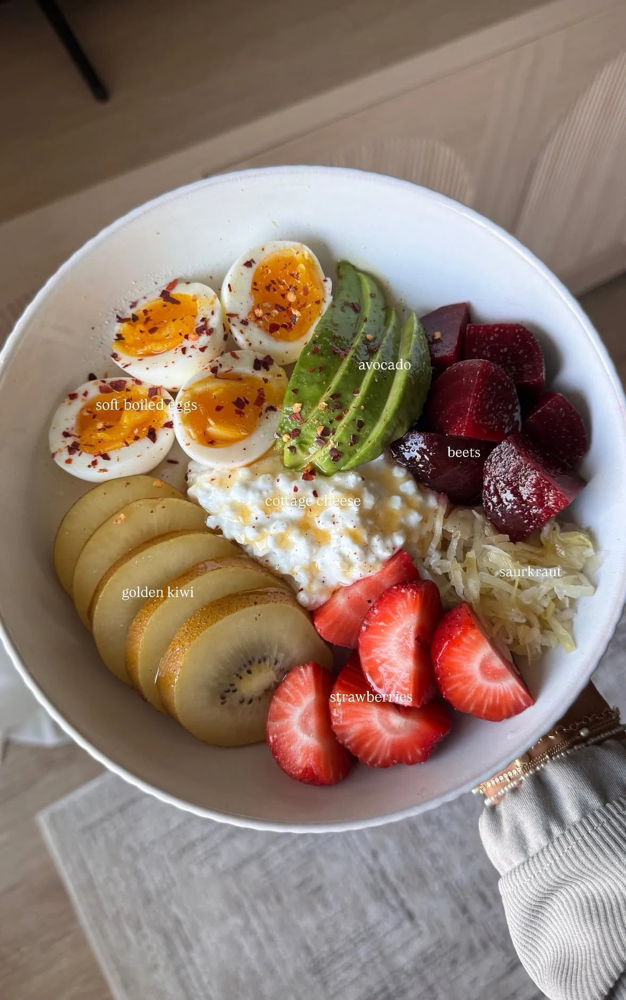
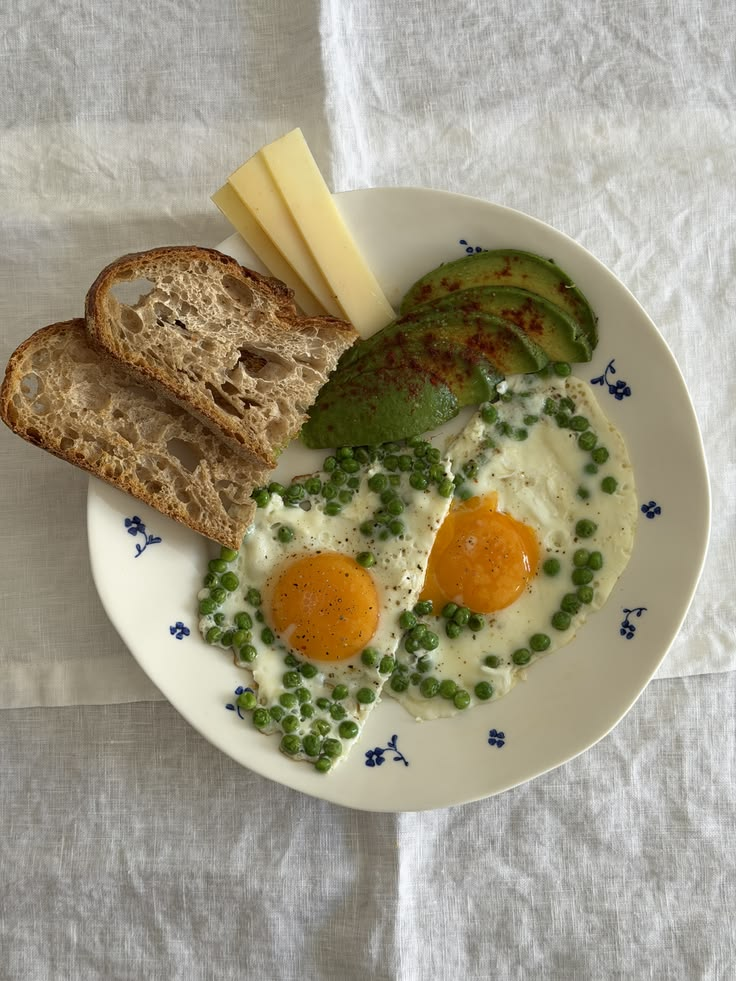
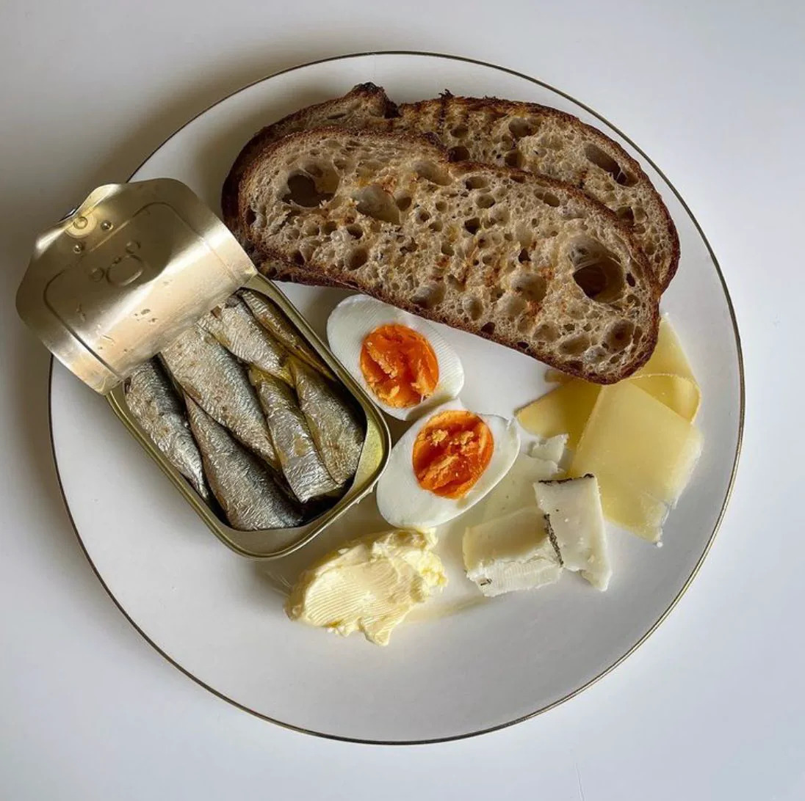
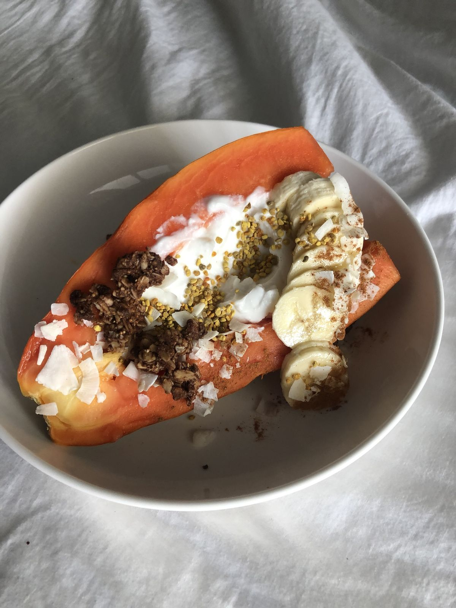

Yogur de soja y coco con plátano al horno, granola casera, crema de cacahuete, canela y lima
Un snack sano y muy equilibrado.
Categorías: Dulce · cítrico · horno · fresco

Un snack sano y muy equilibrado.

La chía es fuente de proteína, mézclalo con el yogur.

Una delicia si se cocina con cariño y sin prisa.

Desayuno, brunch o comida.

Prueba a mezclar el cottage con los huevos revueltos.

Un combo proteico super nutritivo, ideal para la piel y el pelo.

Súbele la calidad con hummus casero y pan de trigo sarraceno y espelta.

Usa un buen AOVE, quesos de calidad y pan de espelta y sarraceno.

Fácil, ligero, hidratante y rápido.